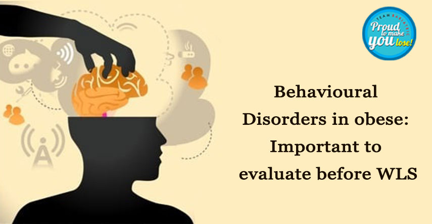

Addressing Behavioral Disorders in Obese Patients: The Role of Laparoscopic Bariatric Surgery
Laparoscopic Bariatric Surgery and Its Effectiveness
Laparoscopic Bariatric surgery is one of the most effective treatments of morbid obesity, resulting in significant and sustained weight loss as well as improvement of various other related co-morbidities and quality of life.
Prevalence of Psychosocial Disorders in Morbidly Obese Individuals
Along with all other co-morbid conditions like Type 2 Diabetes Mellitus, Hypertension, and PCOD, etc., the prevalence of psychosocial disorders, including suicidal behavior, as well as substance abuse or eating disorders, is quite high among morbidly obese individuals.
Importance of Psychiatric Evaluation Before Bariatric Surgery
That is why, while evaluating for bariatric surgery, a psychiatric evaluation of individuals undergoing bariatric surgery is a must nowadays, since one might miss a pre-existing mental illness leading to inadequate treatment before and after surgery.
Factors Contributing to Suicidal Behavior Post-Surgery
Some of these issues like lack of physical activity before and after surgery, lack of improvement in quality of life, persistence or recurrence of sexual dysfunction, and history of ill-treatment in childhood might contribute to suicidal ideas if not assessed preoperatively.
High Expectations and Potential Disappointments Post-Surgery
These patients might have very high expectations of body appearance post-operatively and might be disappointed by the physical outcomes of the surgery. Sometimes weight regain might also lead to suicidal behaviors.
Increased Alcohol Sensitivity Post-Bariatric Surgery
It has been found that after bariatric surgery, the alcohol sensitivity of certain individuals might rise. Alterations in the GI tract after surgery lead to altered absorption of alcohol. It has been seen on several occasions that certain individuals continue alcohol consumption after surgery. Therefore all candidates of bariatric surgery are counseled and educated about the ill effects of alcohol after bariatric surgery and to minimize the use of it.
Compulsive Eating Disorder and Its Persistence Post-Surgery
When undergoing the dietary pattern of morbidly obese patients, there is a high prevalence of compulsive eating disorder. These problems can also persist after bariatric surgery. Few patients may develop ‘loss of control’ eating, and even self-induced vomiting. These conditions are associated with less weight loss and increased fear of weight regain.
Importance of Comprehensive Follow-Up Programs
According to Dr. Atul NC Peters, one of the pioneers of weight loss treatment in Delhi and among the top 10 obesity surgeons in India, it is important that such follow-up programs are developed, that address these types of problems focusing on psycho-social factors as well as eating disorders for a successful outcome.
Back to Blog